人工智能在政务数据
开发利用中的应用
遵义市大数据发展管理局 · 李远
课程概览
本课件共四大部分，系统介绍AI在政务领域的理论基础与实践应用

引言：人类科技革命的加速度
从万年农耕到百年工业，从十年互联网到今天的AI——科技革命的节奏越来越快
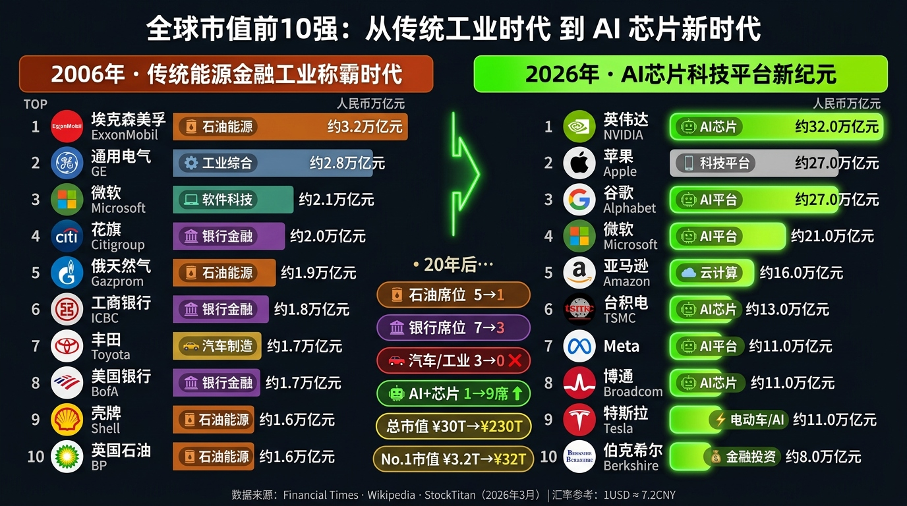
20年间，全球经济权力从"挖石油、造汽车、放贷款"全面转向"造芯片、建平台、做AI"
——这不是渐进式变化，而是一场彻底的产业颠覆
党中央高度重视人工智能发展，多次作出重要部署
什么是人工智能
核心比喻：AI就像给电脑装上了一个"大脑"

人工智能（Artificial Intelligence）是研究、开发用于模拟、延伸和扩展人类智能的理论、方法、技术及应用系统的技术科学。简单来说：AI就是让机器能够像人一样"思考"和"行动"。
就像教小孩认字：先看大量例子，然后自己总结规律。机器不需要人逐条编写规则，而是从数据中自动学习。
- 监督学习：有老师指导，给机器标好答案的数据去学
- 无监督学习：自己摸索，机器从数据中自己发现规律
- 强化学习：试错学习，像下棋——赢了奖励、输了惩罚
如果机器学习是"看书学习"，深度学习就是"在脑子里建了一个微型大脑"。为什么叫"深"？因为网络有很多层，每层学不同特征。
看猫的照片：
- 第一层识别边缘
- 第二层识别形状
- 第三层识别耳朵和尾巴
- 最终判断：这是猫 🐱
NLP就是给机器请了一个"翻译官"，把人类语言翻译成机器能理解的信号。ChatGPT和DeepSeek的核心能力就是NLP。
- 分词：将语句拆解成最小语义单元
- 语义理解：理解句子含义与意图
- 情感分析：判断文本正面/负面情绪
- 文本生成：像人类一样写出流畅文字
- 📱 手机解锁（人脸识别）— 深度学习
- 🗺️ 导航软件路径规划 — 机器学习
- 🛒 购物推荐算法 — 协同过滤+机器学习
- 🎵 短视频内容推送 — 推荐算法
- 📷 拍照翻译（OCR+翻译）— NLP+计算机视觉
- 🎙️ 语音助手（Siri/小度/天猫精灵）— 语音识别+NLP
AI发展历史
从1950年图灵测试到2026年多模态爆发 — 点击各时代探索里程碑

AI三大基石
算力 · 算法 · 数据 — 三者缺一不可，构成AI发展的铁三角
基础知识
- 计量单位：FLOPS（每秒浮点运算次数），1 EFLOPS = 每秒百亿亿次
- 核心硬件：GPU（图形处理器）是AI训练的核心，一块顶级GPU价值几十万元
- 训练ChatGPT-4需要数万张GPU协同工作，耗电量相当于一个小城市
- 国产算力：华为昇腾芯片、寒武纪芯片正在打破垄断
🏔️ 贵州算力优势
- 全国一体化算力网络国家枢纽节点
- 三大运营商数据中心在贵州布局
- 2025年算力规模达到 150 EFLOPS
- 2027年目标 210 EFLOPS，国产智算全国前列
- 华为云数据中心落户贵安新区
- 苹果iCloud中国数据中心在贵安
🔧 AI芯片全景 — 算力的"心脏"
如果说算力是"发动机"，那么芯片就是发动机里的"汽缸"。不同类型的芯片各有所长，就像不同工种各司其职。

电脑的"大脑管家"，什么都能干，但一次只能做少量任务。
好比一位全能型教授，什么都懂，但一次只能辅导几个学生。
代表：Intel至强、AMD EPYC
AI角色：负责任务调度和数据预处理，不擅长大规模并行计算。

原本为游戏画面设计，却意外成为AI训练的"主力军"。
好比一万个小学生同时做加法，单个简单但胜在数量庞大。
代表：NVIDIA A100、H100、H200（训练ChatGPT的核心）
AI角色：大规模并行计算，是当前AI训练和推理的绝对主力。

Google专门为AI设计的"定制芯片"。
好比一台专用计算器，只做矩阵运算，但做得极快。
代表：Google TPU v5e
AI角色：专用于Google自家AI模型训练（Gemini等）。

嵌入手机、电脑中的"AI小助手"，让终端设备也能跑AI。
好比每个人口袋里的迷你AI加速器。
代表：华为麒麟芯片中的NPU、苹果Neural Engine
AI角色：端侧推理，如手机拍照AI优化、语音识别。
美国对华芯片出口限制后，国产芯片加速追赶：
- 华为昇腾910B/910C — 国产AI训练芯片代表，已在多个政务AI项目中规模部署
- 寒武纪思元系列 — 专注AI推理加速，在智慧城市、安防等领域广泛应用
- 百度昆仑芯 — 百度自研，用于搜索和文心一言
- 海光DCU — 兼容CUDA生态的国产GPU替代方案
贵州作为全国算力枢纽节点，华为昇腾生态在贵安新区已形成集聚效应，为政务AI提供国产算力底座。
（EFLOPS）
（EFLOPS）
数据中心
核心算法演变
- 传统算法（决策树、回归等）：像查字典一样按规则查找
- 神经网络：模仿人脑，越学越聪明
- Transformer架构：2017年Google提出，是ChatGPT的核心架构
以前的AI读文章像"逐字阅读"，Transformer能"一目十行"。"注意力机制"让AI能关注最重要的信息。
开源 vs 闭源生态
DeepSeek、Llama（Meta）、通义千问 — 代码公开，所有人可修改、改进、部署
GPT-4、Claude、Gemini — 商业保密，通过API调用
数据质量 > 数据数量
给学生10本精品教材，比给100本劣质教材效果更好。"垃圾进，垃圾出"——数据质量决定AI质量。
数据类型
- 结构化数据：表格数据（户籍信息、纳税记录）
- 非结构化数据：文本、图片、视频、语音（占总量80%）
- 半结构化数据：日志、邮件等
政务数据的特殊价值
人口、教育、社保、医疗——涵盖每一位公民
来源于政府登记和管理，可信度远超互联网数据
多年积累的历史数据，可支撑趋势分析与预测
多部门数据可以交叉分析，产生更大价值
AI对社会的影响与思考
机遇与挑战并存，政策引领方向
- 提高效率：一个AI助手可以替代大量重复性工作，让政府工作人员专注于更有价值的事务
- 精准决策：数据驱动代替经验驱动，减少主观判断偏差
- 普惠服务：偏远山区也能获得与大城市同等质量的公共服务
- 降低成本：AI自动化处理降低行政成本
- 24小时服务：政务AI不休息，随时响应群众需求
- 数据安全与隐私保护：政务数据涉及公民隐私，一旦泄露后果严重
- AI偏见和公平性：训练数据中的偏见会被AI放大，可能导致不公平决策
- 就业结构变化：部分重复性岗位将被AI替代
- 可解释性问题：AI的决策过程不透明，"黑箱"风险
- 技术依赖风险：过度依赖AI可能导致能力退化
- 2024年政府工作报告：明确开展"人工智能+"行动，推动AI与各行业深度融合
- 2025年标杆评选："人工智能+政务"规范应用案例评选，全国14个入选，引领示范
- 安全可控原则：强调"安全可控"，推动国产化替代，保障数据主权
- 贵州先行先试：贵州依托算力优势，率先探索政务AI应用
大数据核心概念
理解大数据的4V特征：Volume / Velocity / Variety / Value

- 2025年全球数据总量超 200ZB
- 1ZB = 10亿TB = 2500亿张DVD
- 仅中国政务系统每天产生的数据就以PB计
- 遵义市2865个数据目录，2313个数据资源
- 每分钟全球发送1.6亿封邮件
- 每分钟500小时YouTube视频上传
- 12345热线每天处理数万条来电，需实时分析
- 政务数据需要实时汇聚、实时处理
- 结构化数据（表格、报表）只占20%
- 非结构化数据（文件、图片、视频、语音）占80%
- 政务数据：户籍照片、执法视频、政策文件、热线录音
- 多样性是政务AI处理难点所在
大数据就像"沙里淘金"——价值密度低但总量巨大，关键在于"挖掘"。政务数据的价值密度远高于互联网数据。
政务大数据
政府在管理和服务过程中产生和使用的数据

政务数据的五大特点
数据共享、开放与授权运营
三种数据开发利用模式的详细对比
三种模式核心对比
| 对比维度 | 📤 数据共享 | 🌐 数据开放 | 🏭 数据授权运营 |
|---|---|---|---|
| 面向对象 | 政务部门 | 社会公众 | 市场主体 |
| 目的 | 履职需要 | 社会利用 | 市场化运营 |
| 数据流向 | 部门间直接流转 | 平台公开发布 | 不出域，产品出域 |
| 运营方式 | 政府间直接开展 | 政府平台发布 | 第三方授权运营 |
| 安全要求 | 高 | 中（脱敏后） | 最高（不出域） |
| 经济价值 | 行政效率提升 | 激活社会创新 | 数据要素市场化 |
可信数据空间
数据流通利用的新型基础设施

📊 数据授权运营完整流程图
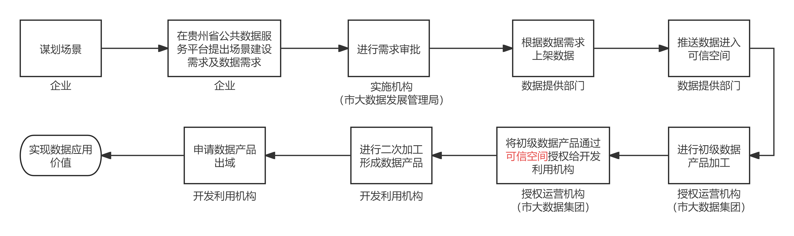
基于共识规则、联接多方主体、实现数据资源共享共用的数据流通利用基础设施。
核心理念：数据不出门，但能被"远程调用"来参与计算与分析。就像两家公司各自锁着自己的账本，但可以通过一个"透明计算器"算出共同需要的结果。
技术支撑
- 隐私计算：多方安全计算、联邦学习、可信执行环境
- 数据沙箱：在安全环境中进行数据分析，原始数据不外泄
- 区块链：确保数据使用可追溯、不可篡改
三大核心价值
让原本"各自为政"的数据能够协同发挥作用，消除部门壁垒
原始数据始终在自己手中，不会泄露到外部，从技术层面保障数据主权
让数据像土地、资本一样成为生产要素，释放数据的经济价值
银行和保险公司合作做风控，双方数据在"看不见原始数据"的前提下完成联合建模，既实现了业务协作，又保护了各自的数据资产。
遵义市数据授权运营实践
六大试点场景 · 打造可信数据空间样板
《数说遵义》
倾听 AI述说遵义
一次会议红了天边，两道江水抱着城弯。
三杯茅台敬远山，四季花开映笑颜。
五岭风送茶香远，六弦歌里梦相连。
七彩云霞照人间，八方来客都留恋。
数一数，遵义多温暖，
山也亲，人也善。
茅台香绕旧河湾，梦回家乡心自安。
十年百年情如线，千里茶林绿连天。
万重云海托青巅，红色记忆在心间。
数不尽的情，唱不完的山，
乌江浪花醉梦间。
一曲苗音绕心弦，
谁不道——遵义最温暖。
数一数，遵义多温暖，
山也亲，人也善。
无论漂泊到哪端，故乡在歌里永相伴。
什么是大模型
读过天下所有书的超级AI大脑

大模型（Large Language Model, LLM）是使用海量数据训练的超大规模AI神经网络。为什么叫"大"？参数量巨大——GPT-4估计超1万亿参数。
如果一个参数是一个脑细胞，人脑有860亿神经元，GPT-4的"脑细胞"数量是人脑的10倍以上。
- 文字创作、翻译、写作、摘要
- 编程开发、代码审查
- 数据分析、报告生成
- 图像识别与理解
- 多语言处理
- 不能真正"理解"含义（"鹦鹉学舌"）
- 不拥有真实情感
- 不能保证100%正确（存在"幻觉"）
- 无法真正进行创造性突破
- 知识有截止日期
大模型产品分类
14款主流产品——通用对话、视频生成、图像生成、行业专用

- 训练成本仅约560万美元
- 性能比肩GPT-4
- 完全开源免费
- R1推理模型展示思考过程
- 政务应用首选低成本方案
- 全球用户超3亿
- GPT-4o多模态，o1推理模型
- 深度研究功能：自主搜索分析
- 能通过律师资格、医师等专业考试
- 高级功能需要付费
- 超长上下文：200万词（相当于15本书）
- 多模态之王：文本/图像/音频/视频
- 唯一可处理视频上传分析的主流AI
- 深度集成Google生态（搜索/邮件）
- 以安全性和"负责任AI"著称
- 可处理20万字超长文档
- 擅长：政策分析、法律合规审查
- 代码编写能力突出
- 中文能力最强大模型之一
- 深度融合百度搜索生态
- 应用：智能客服、内容创作
- 企业办公、知识管理
- 全方位开源生态，模型种类丰富
- 多个政务平台已采用
- 多模态能力强，支持文档理解
- 云端部署与私有化部署均支持
- 日常助手型AI，轻量化设计
- 与抖音生态深度集成
- 适合内容创作、日常问答
- 移动端体验优秀
- 最新一代多模态音视频联合生成
- 支持文字/图片/音频/视频四种输入
- 输出15秒高质量多镜头音视频
- 双声道立体声音频
- 场景：广告、影视特效、游戏动画
- AI视频生成的先驱
- 能理解物理世界的运动规律
- 可生成逼真的场景和人物运动
- 国产视频生成标杆
- 支持图生视频、文生视频
- 适合短视频内容创作
- 艺术风格图像生成领导者
- 擅长高质量插画和概念设计
- 通过Discord使用
- 精准遵循文字描述生成图像
- 与ChatGPT深度集成
- 可在对话中直接生成图像
- 画面连贯性和艺术感出色
- 与Gemini集成使用
- 支持精细的风格控制
- "AI for Industries"理念
- 五大方向：NLP/CV/多模态/预测/科学计算
- 政务Thinking大模型：公文智能生成
- 材料整理、审批辅助、政策研判
- 与电解铝企业联合研发预测模型
AI应用示例
三大前沿AI产品 · 感受人工智能的真实能力
2025年初，中国AI公司深度求索（DeepSeek）发布DeepSeek-R1，训练成本仅约560万美元，性能比肩GPT-4，完全开源——被誉为AI领域的"鲶鱼效应"，引发全球震动。
训练成本
训练成本
如果GPT-4是"劳斯莱斯"，DeepSeek就是"性价比之王"——以1/20的成本达到同等性能。
- 降低门槛：低成本让县市级政府也能用上强大AI
- 开源赋能：可以基于DeepSeek进行私有化部署，保障数据安全
- 国产替代：减少对国外AI的依赖
- 贵州省"小贵"等已采用DeepSeek底层模型
在多项国际基准测试中，DeepSeek-R1的得分比肩甚至超越GPT-4
完全开源，任何人、任何机构都可以免费下载、使用、修改、再分发
R1模型会展示自己的思考过程（Chain of Thought），像"会思考的AI"
在美国芯片出口限制下，用国产算力和创新算法实现了突破
📱 DeepSeek的实际应用
DeepSeek App已成为国内最受欢迎的AI对话工具之一，支持文本创作、代码编写、数学推理、知识问答等能力，面向普通用户完全免费开放。
贵州省"小贵"AI政务助手已采用DeepSeek底层模型，为市民提供政策查询、办事指南、智能问答等服务。多地政府正在基于DeepSeek部署本地化政务AI。
完全开源的特性，让企业和政府能在自有服务器上运行DeepSeek，数据不出内网。已有大量企业用于内部知识库、客服系统、文档处理等场景。
大模型不仅能写文章、编代码，还能"看懂"视频、"生成"动作。Seedance 2.0是字节跳动推出的AI视频生成模型，能通过文字描述自动生成逼真视频场景，包含人物动作、光影效果、物理运动等。
🔍 视频背后的AI能力
通过文字描述生成逼真视频场景，包含人物动作、光影、物理运动等
AI能理解"踢足球"概念：包含球场、球员、射门、守门员等复杂元素的协同运动
未来可用于政策宣传视频、城市仿真、应急演练模拟、文旅推广等场景
💡 思考：如果遵义要做一条"遵义文旅宣传视频"，AI能否自动生成？请看下面的示例——
🌍 AI生成的遵义文旅宣传视频
AI已经能够生成包含遵义特色景观、文化元素的宣传视频。未来政务人员只需输入几句描述，AI就能自动生成专业级别的文旅宣传片、政策解读视频、城市形象宣传片等。
如果说DeepSeek让AI"会思考"，Seedance让AI"会创作"，那OpenClaw就是让AI"会做事"。OpenClaw是2025年底由奥地利开发者Peter Steinberger发布的开源AI Agent框架，短短几个月就获得GitHub超10万Star，在中国掀起了一场全民部署AI助手的热潮。
OpenClaw不是一个AI模型，而是一个"AI管家框架"——它就像一个万能遥控器，可以对接各种AI大脑（Claude、GPT、DeepSeek等），让AI不只是"聊天"，还能真正去执行任务。
数据不上传云端，隐私安全有保障
在微信、Telegram、WhatsApp等发消息，AI就去执行
记住你的偏好、工作习惯，越用越懂你
阿里云、腾讯云、字节火山引擎、百度、京东云等全面支持OpenClaw生态
2026年3月，近千人在腾讯深圳总部排队安装OpenClaw——学生、退休老人、白领都来了
短短数月催生14个以上衍生项目，从极简版到企业版、从嵌入式到机器人版
帮助处理邮件、管理日程、整理文档——加班族们蜂拥而至
🎯 OpenClaw的主要应用场景
- 自动清理和分类邮件
- 管理日历、设置提醒
- 代办航班值机
- 整理会议纪要
- 连接企业内部系统（钉钉、飞书等）
- 自动化数据报表生成
- 客户服务智能应答
- 文档智能审核与处理
- 通过消息指令控制实体机器人
- 机器人空间记忆与环境理解
- 机械臂自动操作
- 工业场景智能巡检
💡 对政务工作的启示：OpenClaw代表了AI从"聊天工具"进化为"行动工具"的趋势。未来政务人员可能只需在手机上发一条消息，AI助手就能自动完成数据查询、报表生成、文件归档等繁琐工作——这就是"AI Agent"带来的效率革命。
大模型发展趋势
AI产业的五大演进方向
大模型训练及优化
从"生才"到"专家"——让大模型变得更智能的主流技术
大模型就像一个"天才少年"，天生聪明但还不够专业。通过不同阶段的"培养"——预训练、微调、对齐、压缩——才能让他成为可以上岗的"政务专家"。

让模型阅读海量文本（数万亿字），学习语言规律和世界知识。
- 数据规模：通常需要几TB到几十TB的训练数据
- 计算量：数千张GPU运行数周到数月
- 成本：数百万到数千万美元

用特定领域的数据（如政务文件、法律条文）进一步训练，让模型成为某个领域的专家。
主流微调方法：
- 全参数微调：调整所有参数，效果最好但成本最高
- LoRA / QLoRA：只调整少量参数，成本降低90%，效果接近
- Adapter：在模型中插入小型适配器，灵活切换不同任务

让人类评判AI的回答好坏，AI根据反馈不断改进。ChatGPT的“好用”就归功于此。
- 奖励模型：根据人类偏好训练“评分器”
- PPO算法：用奖励信号优化模型回答质量
- DPO算法：DeepSeek采用的更高效方法，省去奖励模型

大模型往往太大、太慢，需要“瘦身”后才能在实际场景中部署。
- 量化（Quantization）：降低数字精度，模型大小可减小75%
- 知识蒸馏（Distillation）：用大模型教小模型，“师父教徒弟”
- 剪枝（Pruning）：去掉不重要的神经元，“精简机构”

主流训练优化技术对比
| 技术 | 比喻 | 核心作用 | 适用场景 |
|---|---|---|---|
| 预训练 | 读完所有书 | 建立基础能力 | 新模型从零开始 |
| 全参数微调 | 进入专业学院 | 领域专精 | 资源充裕、追求极致效果 |
| LoRA/QLoRA | 给学生加小课 | 低成本微调 | 政务场景常用，性价比高 |
| RLHF/DPO | 老师批改作业 | 对齐人类偏好 | 提升回答质量和安全性 |
| RAG | 开卷考试 | 检索+生成 | 政务最常用，不需重新训练 |
| 量化/蒸馏 | 瘦身+带徒弟 | 压缩部署 | 边缘设备、成本敏感场景 |
“快速落地”型：
RAG + 开源模型（如DeepSeek），不需要训练，几周即可上线。适合政策查询、办事指南等场景。
“深度定制”型：
LoRA微调 + RLHF对齐，培养专属政务大模型。适合有大量政务数据积累的单位。
全国政务AI发展概况
2025年政务AI进入爆发式增长阶段
中标金额全国排名
（规范应用评选）
中西部加速追赶
智办"的升级目标
- 政务AI从"能用"阶段进入"好用、智能用"阶段
- 大模型在政务领域的应用场景快速扩展：审批、问答、分析、决策
- 各地竞相建设政务AI中台，统筹算力资源，避免重复建设
- "人工智能+"行动推动政务服务从线下走向全天候智能服务
全国标杆案例
深圳、上海、浙江的政务AI领跑实践
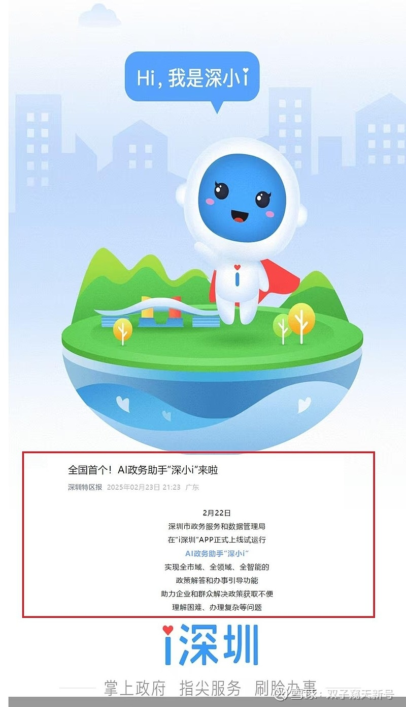
2025年2月上线，融入政务服务"问、查、导、办、评"全流程。构建深圳市AI中台，统筹全市AI算力资源，支撑各部门政务AI应用。
七大应用场景
- ① 智能问答
- ② 边聊边办（对话式办事）
- ③ 智能辅助申报
- ④ 智能进度查询
- ⑤ 智能投诉建议
- ⑥ 智能政策送达
- ⑦ "人工+智能"协同
核心数据
- 智能预审材料：AI提前审查申请材料完整性，减少退件
- 智能推荐办事指南：根据用户情况个性化推荐最优办理路径
- 全程陪伴式服务：从咨询到办结，AI全程引导
- AI辅助审批：减少人工判断差异，提升审批一致性
- 智能客服：24小时响应群众政策咨询
- 基于大模型的政策"智能问答"：将数千个政策文件转化为可对话的知识库
贵州省级案例
贵州依托算力优势，率先探索政务AI应用
- 智能问答：能与用户实时对话，解答政策咨询
- 精准政策解读：将晦涩法规转化为通俗易懂的回答
- 个性化办事指南：根据用户情况推荐最优路径
- 快速识别用户意图，关联数据分析
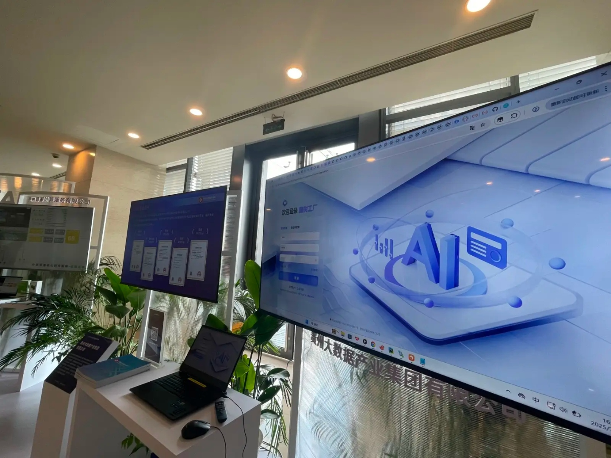
- 接入DeepSeek、通义千问、MiniMax等多个大模型
- 250P多元混合国产算力
- 发布：智能问政、政策咨询助手、政务办事小助等
- 支撑政务服务、基层治理、城运中心等政务大模型底座
贵州省AI发展目标（2025-2027）
| 年份 | ⚡ 算力规模 | 📱 应用场景 | 💰 AI核心产业 | 重点领域 |
|---|---|---|---|---|
| 2025年 | 150 EFLOPS | 100+ 场景 | 240亿元 | 酱酒、化工、煤矿、旅游、医疗 |
| 2026年 | 180 EFLOPS | 200+ 场景 | 290亿元 | 广电、金融、交通、教育 |
| 2027年 | 210 EFLOPS | 500+ 场景 | 350亿元 | 24个重点行业全面覆盖 |
遵义市政务数据应用实例
城市治理 · 公共服务 · 产业发展 — 8大典型应用
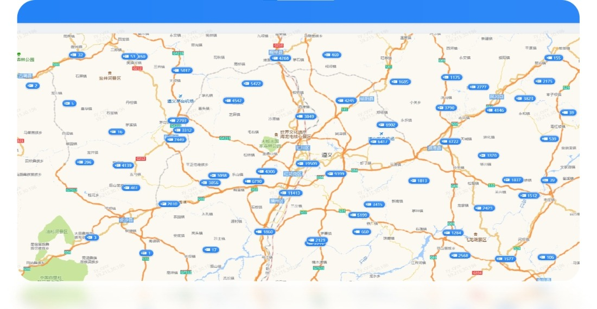
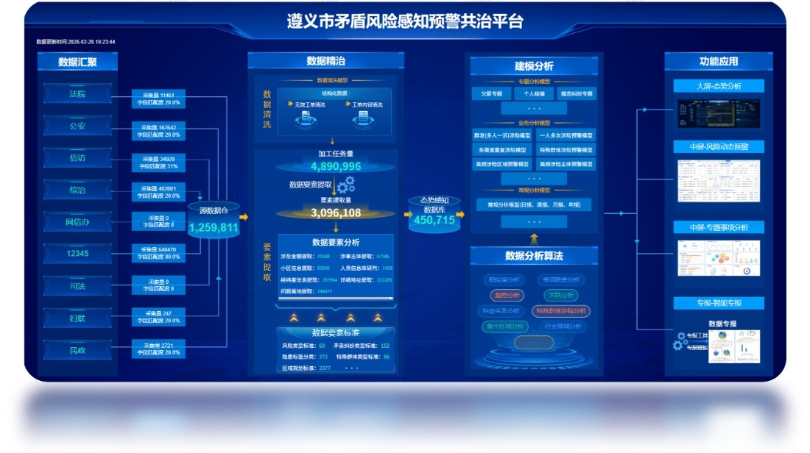
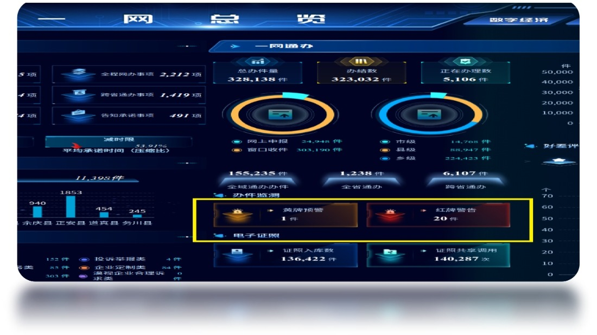
- 1天件：提前12小时黄牌
- 2-5天件：提前24小时黄牌
- 6天以上：提前48小时黄牌
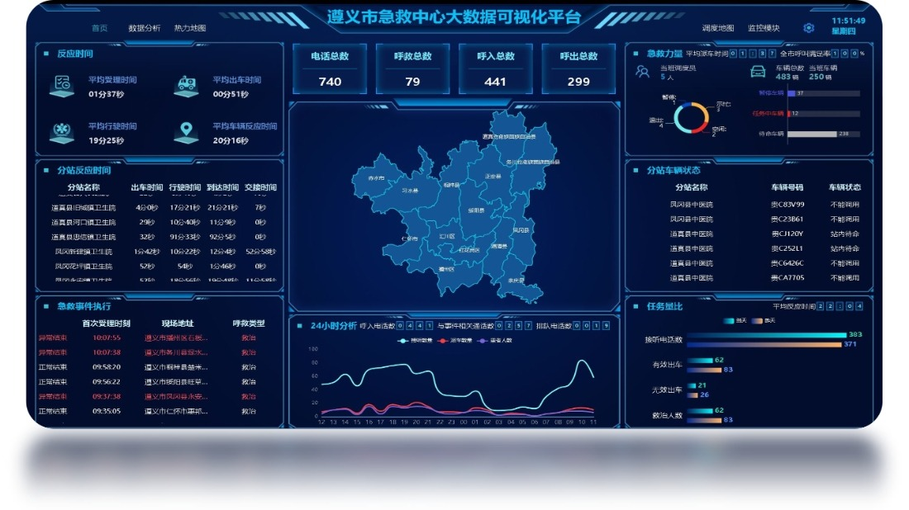
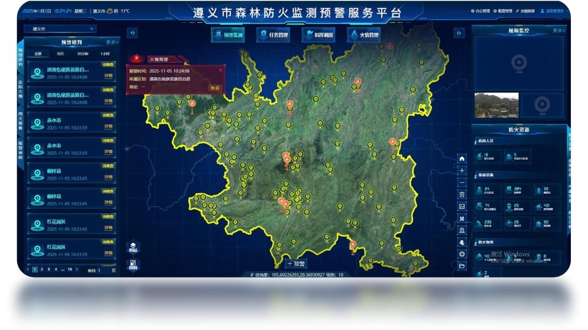
前端摄像头AI识别林火特征 → 自动生成预警信息 → 匹配对应处理单位与责任人 → 火情确认后自动切换指挥调度模块
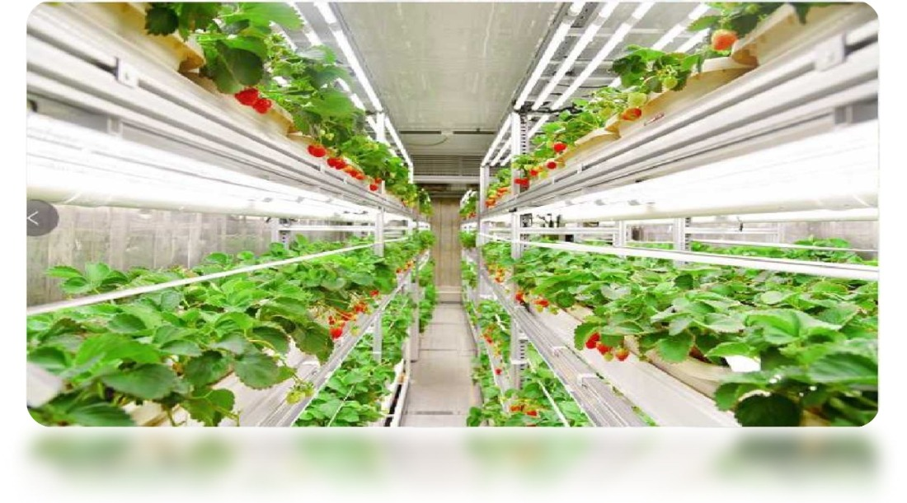
- 检测准确率：98.2%
- 单帧推理时间：65ms
- 适应场景：密集果丛、光照变化、枝叶遮挡
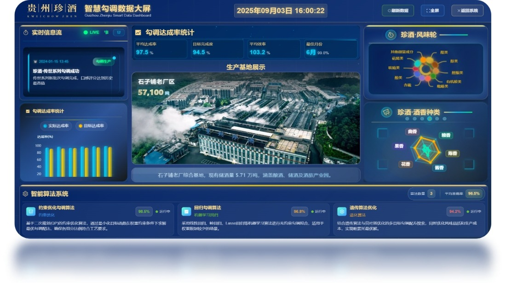
- 从手工化→ 智能化
- 从经验化→ 数据化
- 从个性化→ 标准化
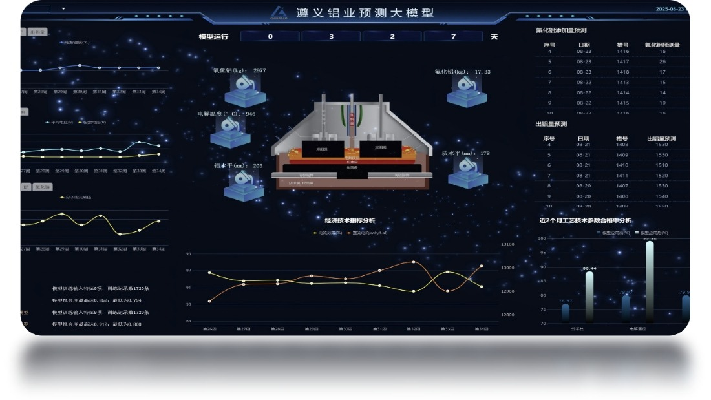
展望与思考
对各部门领导的五条建议 · 共同推进遵义市AI+政务发展
"人工智能不会取代政府工作人员，
但会用AI的政府工作人员将取代不会用AI的政府工作人员。"